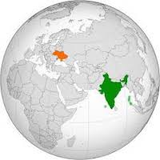

The Taj Mahal is considered to be the greatest
architectural achievement in the whole range of Indo-Islamic architecture.
Shah Jahan, in order to perpetuate the memory of his favourite wife, Mumtaz Mahal, who died in 1631, had this funerary mosque built.
India is known for many, many different aspects –its food, culture, its massive population, its natural landscapes, its languages, classical dances.

Qutub Minar is the tallest building in the world that
reaches a height of 72.5 meters. It is made of bricks. There are a total
of 379 steps that reach the top of the minaret.
All tribes in East India have their own folk dances associated with their religion and festivals. The tribal heritage in the region is rich with the practice of hunting, land cultivation and indigenous crafts. The rich culture is vibrant and visible with the traditional attires of each community.
Most Northeast Indian relied on farming for food. They planted corn, squash, beans, pumpkins, and gourds. They also lived by hunting and gathering. Their diet included deer, elk, moose, waterbirds, turkeys, fish, leaves, seeds, berries, roots, and nuts.